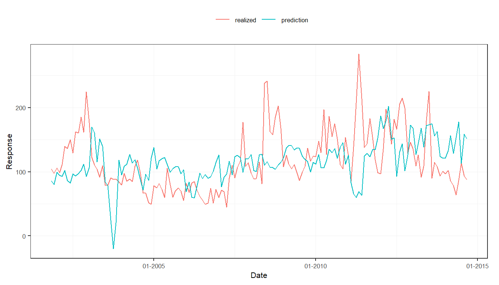
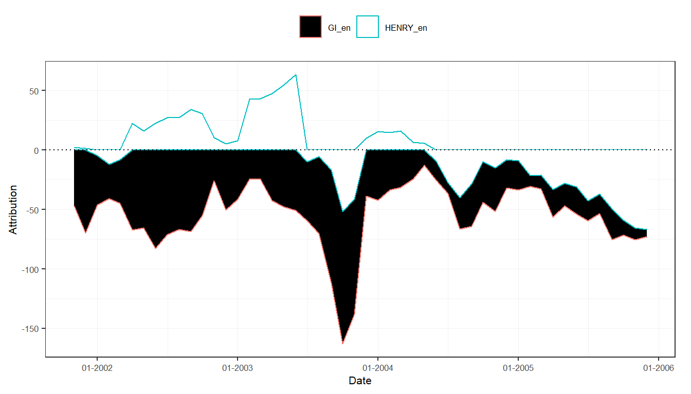
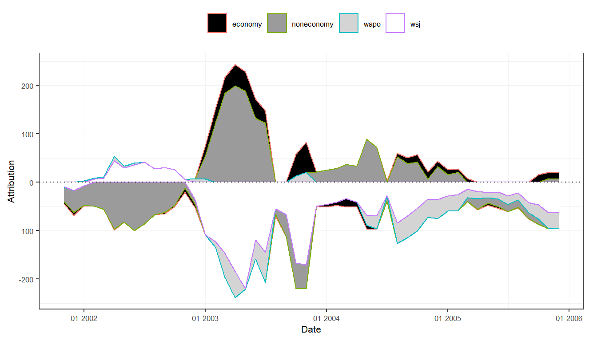
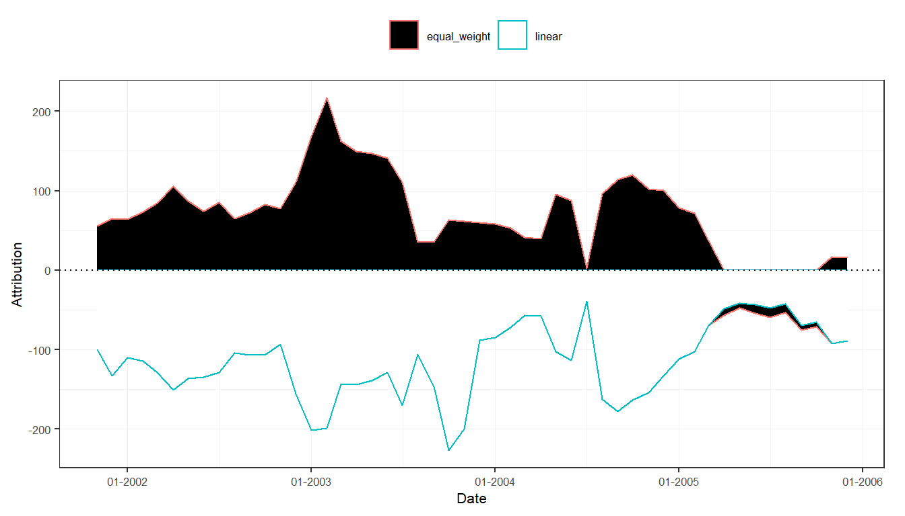

This tutorial learns how to use created sentiment measures in both a high-dimensional regression context proposed by the package, as well as in any other (regression) model.
Preparation
library("sentometrics") library("ggplot2") library("data.table") library("zoo") data("usnews") data("epu") data("list_lexicons") data("list_valence_shifters") set.seed(505)
We create some sentiment time series to showcase the models with.
corpus <- sento_corpus(usnews) lexicons <- sento_lexicons(list_lexicons[c("GI_en", "HENRY_en")]) ctr <- ctr_agg("counts", "proportional", c("linear", "equal_weight"), by = "month", lag = 6) measures <- sento_measures(corpus, lexicons, ctr)
As target variable, we take the built-in Economic Policy Uncertainty (EPU) index, and randomly generate two other covariates.
y <- epu[epu$date %in% get_dates(measures), "index"] x <- data.frame(x1 = runif(length(y)), x2 = rnorm(length(y))) # two other (random) x variables length(y) == nobs(measures)
## [1] TRUEBackground
The model supported is the elastic net regression, made available as a finetuned interface to the glmnet::glmnet() function. The elastic net has two hyperparameters which need to be calibrated: alpha (where if 1 one gets the LASSO regression, and if 0 one gets the Ridge regression), and lambda (which defines the degree of regularization, where if 0 there will be none). The possible options to calibrate these parameters are to use an information criterion, or to use time series cross-validation.
The regression specifications are defined through the ctr_model() function. A "gaussian" model means a linear regression. The type argument decides on the hyperparameter calibration method, in this case, a Bayesian information criterion will be used. The model is run with sento_model(), and results in a sento_model object.
ctrIC <- ctr_model(model = "gaussian", type = "BIC") # same as ctr_model() out1 <- sento_model(measures, y, x, ctr = ctrIC)
## alphas run: 0, 0.2, 0.4, 0.6, 0.8, 1summary(out1)
## Model specification
## - - - - - - - - - - - - - - - - - - - -
##
## Model type: gaussian
## Calibration: via BIC information criterion
## Number of observations: 235
## Optimal elastic net alpha parameter: 1
## Optimal elastic net lambda parameter: 3.6
##
## Non-zero coefficients
## - - - - - - - - - - - - - - - - - - - -
##
## (Intercept) 171.003415
## GI_en--noneconomy--equal_weight -7.595736
## HENRY_en--wsj--linear -8.026232
## HENRY_en--wapo--linear -2.317268
## x1 -14.395650
## x2 2.859282To do predictions with the model, there is the predict() function.
nx <- nmeasures(measures) + ncol(x) newx <- runif(nx) * cbind(as.data.table(measures)[, -1], x)[30:39, ] # 10 random new predictors predict(out1, newx = as.matrix(newx))
## s0
## [1,] 116.9924
## [2,] 144.2360
## [3,] 145.9814
## [4,] 121.0026
## [5,] 113.9048
## [6,] 152.8811
## [7,] 131.0230
## [8,] 160.1343
## [9,] 120.2925
## [10,] 145.3160The ctr_model() function provides much more flexibility. Below setup uses a cross-validation calibration approach, for a rolling in-sample size of 70 and an out-of-sample test set of 10. This is typically more time-consuming, hence, we show how one can parallelize the single model call. We also take the differences of the target variable, and shift it four periods ahead. The data reorganization is handled internally.
library("parallel") library("doParallel") cl <- makeCluster(2) # two cores registerDoParallel(cl) ctrCV <- ctr_model(model = "gaussian", type = "cv", h = 4, do.difference = TRUE, trainWindow = 70, testWindow = 10, alphas = c(0.10, 0.50, 0.90), do.progress = FALSE) out2 <- sento_model(measures, y, x = x, ctr = ctrCV) stopCluster(cl) registerDoSEQ() # ensures sequential processing hereafter summary(out2)
## Model specification
## - - - - - - - - - - - - - - - - - - - -
##
## Model type: gaussian
## Calibration: via cross-validation; ran through 152 samples of size 70, selection based on RMSE metric
## Number of observations: 231
## Optimal elastic net alpha parameter: 0.5
## Optimal elastic net lambda parameter: 100
##
## Non-zero coefficients
## - - - - - - - - - - - - - - - - - - - -
##
## (Intercept) -6.094549
## x1 13.631544
## x2 1.391514The sento_model() function supports both linear and logistic (binomial and multinomial) regression. It suffices to change the model argument in ctr_model() to switch between models, assuming you provide the right target input data.
Setting do.iter = TRUE and picking a nSample size will run regressions iteratively moving forward over time. At every run, as in a real forecasting experiment, an out-of-sample prediction is generated and stored. To speed up the analysis, one could try to augment the nCore argument which will enact parallel computation across the different iterations.
ctrIter <- ctr_model(model = "gaussian", type = "AIC", do.iter = TRUE, h = 3, oos = 2, alphas = c(0.25, 0.75), nSample = 75, do.progress = FALSE) out3 <- sento_model(measures, y, x = x, ctr = ctrIter) summary(out3)
## Model specification
## - - - - - - - - - - - - - - - - - - - -
##
## Model type: gaussian
## Calibration: via AIC information criterion
## Sample size: 75
## Total number of iterations/predictions: 155
## Optimal average elastic net alpha parameter: 0.64
## Optimal average elastic net lambda parameter: 2.25
##
## Out-of-sample performance
## - - - - - - - - - - - - - - - - - - - -
##
## Mean directional accuracy: 46.1 %
## Root mean squared prediction error: 52.55
## Mean absolute deviation: 40.61The out-of-sample predictions can be plot against the true realizations of the target variable.
plot(out3)

Take the model output from the previous example. To analyze the contribution of each sentiment variable component to a prediction, called attribution, the attributions() function does the trick.
attr3 <- attributions(out3, measures, refDates = names(out3$models)[1:50])
plot(attr3, "lexicons")

plot(attr3, "features")

plot(attr3, "time")

For a very deep analysis, it is also possible to trace back the contribution of a single document to a prediction at a given point in time. As the time lag for the sentiment measures was set to 6 months, news articles up to 5 months before a prediction date have an impact, the degree depending on the sentiment and the associated time weight.
attr3$documents$`2004-06-01`
## id date attrib
## 1: 842613957 2004-01-01 2.1730324
## 2: 842615485 2004-01-01 -0.4861275
## 3: 830982208 2004-01-01 -0.2865413
## 4: 842616604 2004-01-01 0.3820924
## 5: 830983876 2004-01-01 -2.1949679
## ---
## 97: 830982195 2004-06-01 -2.4634854
## 98: 842615105 2004-06-01 -2.4266404
## 99: 842615622 2004-06-01 -2.4363705
## 100: 842615125 2004-06-01 -0.6905909
## 101: 842615280 2004-06-01 0.5362519The sento_model() function is no perfect toolbox. However, by converting the sentiment measures into a straight data.table (or a data.frame), one is not limited. For instance, below example shows how to do a low-dimensional regression using the lm() function, with some of the sentiment variables created in the package.
dt <- as.data.table(measures) z <- zoo(dt[, 2:7], order.by = dt[["date"]]) reg <- lm(y ~ z)
At some point we might integrate some other useful models into the sento_model() function, but having the sentiment measures at your disposal, you are already good to go elsewhere.
The above examples take a time series perspective. However, sentiment on text-level can also be useful to predict other attributes of a text. We illustrate one possible approach hereunder, where we try to predict if news discusses the economy using sentiment information.
y <- as.factor(usnews$economy)
To calculate a couple of sentiment variables, we split the Harvard General Inquirer lexicon into 15 random groups.
l <- list_lexicons$GI_en lg <- split(l, factor(round(14 * runif(nrow(l))), labels = paste0("s", 1:15))) lexicons <- sento_lexicons(lg) nrow(l) == nrow(rbindlist(lexicons))
## [1] TRUESentiment is computed in one go using the compute_sentiment() function, this time using an inverse U-shaped scheme for normalizing the scores.
s <- compute_sentiment(usnews$texts, lexicons, "inverseUShaped") colnames(s)
## [1] "id" "word_count" "s1" "s2" "s3"
## [6] "s4" "s5" "s6" "s7" "s8"
## [11] "s9" "s10" "s11" "s12" "s13"
## [16] "s14" "s15"The data is divided into a training set, and a test set for model validation.
We employ support vector machine classification to estimate our model.
Let’s construct confusion matrices to see how well the model does in-sample, and in the test set.
conf_matrix(model, dataTrain)
## Actual
## Prediction 0 1
## 0 2865 630
## 1 0 5conf_matrix(model, dataTest)
## Actual
## Prediction 0 1
## 0 514 131
## 1 0 0Not good at all, none of the economic articles are picked up out-of-sample! Off-the-shelf modeling is rarely a good idea. Time to go back to the drawing table and better tune those sentiment predictors and model parameters. Maybe the random lexicon splitting was not such a good idea?